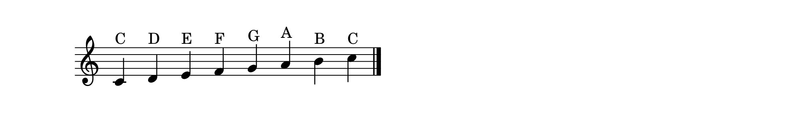
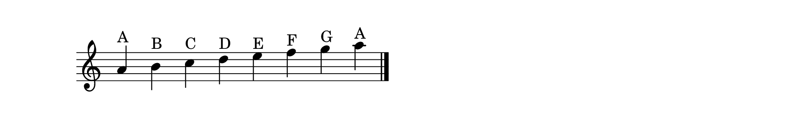

The Architecture of Sound
A scale is an ordered collection of notes arranged by pitch that forms the basis of a piece of music. If you think of a key as a home, the scale is the set of rooms inside it,each note belongs there, and together they define the sound and mood of the music.
Scales are deeply practical. Every melody you have ever heard is built from a scale. Every chord progression follows the logic of a scale. When you learn scales, you are learning the grammar of music.
The Major Scale
The major scale is the most important scale in Western music,the one that sounds “normal” to most ears. When you sing “Do, Re, Mi, Fa, Sol, La, Ti, Do,” you are singing a major scale.
What defines it is the pattern of intervals: W–W–H–W–W–W–H (whole step, whole step, half step, whole step, whole step, whole step, half step). Follow this pattern from any starting note and you will produce a major scale.
C major is the easiest to see because it uses only white keys: C–D–E–F–G–A–B–C.

Try It: G Major Scale
Apply the W–W–H–W–W–W–H formula starting on G. You will find one black key is needed: F♯. The G major scale is G–A–B–C–D–E–F♯–G.
The Natural Minor Scale
Where the major scale sounds bright and stable, the natural minor scale sounds darker and more emotional. Its formula is: W–H–W–W–H–W–W.
The A minor scale uses only white keys: A–B–C–D–E–F–G–A. It shares every note with C major but starts on A, which gives it a completely different character. This relationship is called relative minor,every major key has one.

Introduction to Modes
Here is a beautiful idea: take the notes of C major and play them starting on a different note. Start on D and play D–E–F–G–A–B–C–D. Same notes, same keyboard, but a completely different sound. That is a mode.
Each starting note produces a different mode with its own distinct color:
Dorian (start on D) , minor with a bright sixth, jazzy and soulful
Mixolydian (start on G) , major with a flat seventh, bluesy and relaxed
Lydian (start on F) , major with a raised fourth, dreamy and floating
You do not need to master all seven modes right now. The point is to understand that a single collection of notes can produce many different emotional colors depending on which note you treat as home.
Exercise: Feel the Modes
Play only the white keys from C to C (Ionian/major). Then D to D (Dorian). Then G to G (Mixolydian). Use the same notes each time but listen to how the mood shifts when the starting note changes.
Why Scales Matter
Practicing scales is not just a technical exercise,it is how you internalize the sound of each key. When you can play a scale without thinking, you have absorbed its geography. Your fingers know where the notes live, and that knowledge feeds directly into sight-reading, improvisation, and composition.
A scale is not a chore. It is a landscape. And the more landscapes you know, the more places your music can go.